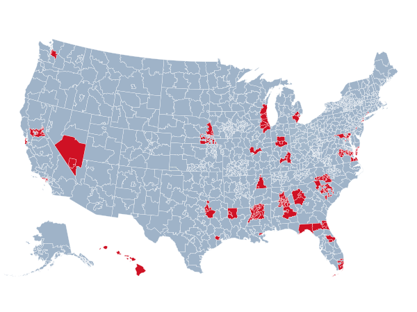

Common charts and graphs
Data visualization is the graphical representation of data. It presents data in the form of a chart or graph to make it easier to identify patterns and understand difficult concepts. Technology allows users to interact with the data by changing the parameters to see more detail and create new insights.
Alluvial diagram
Area chart
Apple Inc. (AAPL) Closing Stock Price
An area graph is a specialized form of the line graph, where data points are connected with a continuous line and the region below that line is filled with a solid color.
Bar chart
The classic bar chart. The height (or length) of each bar represents data. The baseline starts at zero.
Barcode chart
Surface temperature anomalies
A compact way to show a distribution, line segments represent individual data points along a single axis.
Baseline chart
Beeswarm
Experimental Plot Beeswarm on Observable
Box plot
Michaelson-Morley Speed of Light Data
Box plots, also called box-and-whisker plots or box-whisker plots, give a good graphical image of the concentration of the data. A box plot is constructed from five values: the minimum value, the first quartile, the median, the third quartile, and the maximum value. We use these values to compare how close other data values are to them.
Bubble chart
The relative harms of drugs
A bubble chart is a variation of a scatter chart in which the data points are replaced with bubbles, and an additional dimension of the data is represented in the size of the bubbles. Just like a scatter chart, a bubble chart does not use a category axis — both horizontal and vertical axes are value axes. In addition to the x values and y values that are plotted in a scatter chart, a bubble chart also z (size) values.
Bump chart
Cartogram
Chord diagram
Choropleth map
Connected scatter plot
Density plot
Difference chart
A difference chart highlights the difference between two values, typically entries vs exits. The amount is encoded as height, and the sign (surplus vs. deficit) as a solid color.
Plot: Difference Chart on Observable
Donut chart
Dot density map
Dot dap
Dot plot
Surface temperature anomalies
Data points plotted as dots on a graph with an x- and y-axis. A dot plot is similar to a histogram in that it displays the number of data points that fall into each category or value on the axis, thus showing the distribution of a set of data.
Frequency trails
Gantt chart
Glyph chart
Grid map
Heatmap
Histogram
Horizon graph
Line chart
Line map
Mosaic plot
Moving bubbles
Network graph

Organogram
Packed bubble chart
Parallel coordinates
Parallel sets
Pictogram
Pie chart
Pyramid chart
Qatar Population Pyramid on Observable
Radar chart
Sankey diagram
Scatter plot
Slope chart
Guide to make a slope graph: Observable
Small multiples
Spiral chart
Square pie chart
Stacked area chart
Stacked bar chart
Step chart
WeWork Valuation
A step chart works like a line chart, but the values change immediately at the x-coordinate instead of being interpolated with a slope.